ICALAB for Image Processing
Toolbox for ICA, BSS, BSE
The ICALAB Package:
has been designed and developed by:
Andrzej Cichocki, Shun-ichi Amari, Krzysztof Siwek,
Sergio Cruces, Toshihisa Tanaka, Pando Georgiev, Zbigniew Leonowicz,
Tomasz Rutkowski, Seungjin Choi, Adel Belouchrani,
Allan Barros, Ruck Thawonmas, Tetsuya Hoya,
Wakako Hashimoto, Yasushi Terazono and Tomomi Watanabe
in cooperation with other members of the
Laboratory for Advanced Brain Signal Processing.
The graphic design, data visualization, user interface, extensive testing
and integration of most of the existing algorithms have been implemented
in MATLAB® by: Krzysztof Siwek, Andrzej Cichocki, Toshihisa Tanaka and Tomasz Rutkowski.
The current version is 2.0a, as of March 20, 2004.
MATLAB® is a registered trademark of The MathWorks, Inc.
A similar package has been developed for
Signal Processing.
The comprehensive reference for both packages is the following book:
Adaptive
Blind Signal and Image Processing
by Andrzej Cichocki and Shun-ichi Amari
John Wiley, Chichester, UK, 2003.
The general concept of ICALAB
The important and unique features of our ICALAB toolboxes are preprocessing
and postprocessing tools (Fig. 0).
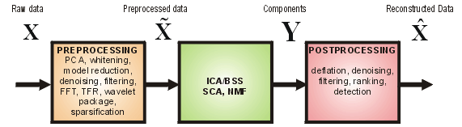
Fig. 0 Conceptual model of ICALAB Toolbox.
Actual optional PREPROCESSING tools include: Differentiation (1st and 2nd order), High Pass Filtering , Averaging, Low Pass Filtering, Subband Decomposition and Selection, FIR/IIR Filter Design Tool as well as user defined preprocessing.
POSTPROCESSING tools actually includes: Deflation and Reconstruction
("cleaning") of original raw data by removing undesirable components, noise or
artifacts.
Moreover, the ICALAB Toolboxes have flexible and extendable structure with the
possibility to extend the toolbox by the users by adding their own algorithms.
The algorithms can perform not only ICA ;but also Second Order Statistics Blind
Source Separation (BSS) Sparse Component Analysis (SCA), Nonnegative Matrix
Factorization (NMF), Smooth Component Analysis (SmoCA), Factor Analysis (FA)
and any other possible matrix factorization of the form X=HS+N or
Y=WX where H=W+ is a mixing matrix or a matrix of basis
vectors.
The ICA/BSS algorithms are pure mathematical formulas, powerful, but rather mechanical procedures:
There is not very much left for the user to do after the
machinery has been optimally implemented. The successful and efficient use of
the ICALAB strongly depends on a priori knowledge, common sense and
appropriate use of the preprocessing and postprocessing tools. In other words,
it is preprocessing of data and postprocessing of models where expertise is
truly needed (see the
book).
On the other hand, the assumed linear mixing models must be valid at least
approximately and original sources signals should have specified statistical
properties.
ICALAB can be useful in the following tasks:
- Reduction of redundancy (Chapter 3),
- Decomposition of a sequence of images into
independent components (Chapters 6-8),
- Spatio-temporal decorrelation of correlated signals (Chapter 4),
- Extraction and removal of undesirable artifacts and
interference by applying deflation (see Chapters 1 and 4),
- Removal of noise or "cleaning" the raw sensor data,
- Extraction of features and patterns,
- Comparison of the performance of various algorithms
for Independent Component Analysis (ICA), Blind Source Separation (BSS),
Sequential Blind Sources Extraction (BSE) algorithms.
The package contains a collection of algorithms for whitening, robust
orthogonalization,
ICA, BSS and BSE. The user can easily compare various algorithms for
Blind
Source Separation (BSS) employing the second order statistics (SOS) and ICA
using the higher order statistics (HOS).
This package is hence quite versatile and extendable for a user algorithm.
Several benchmarks are included to illustrate the performance of the various
algorithms work for a selection synthetic and real world images
(see Benchmarks).
Limitation of version 2.0:
The current version of the package is limited to a maximum of 16 images. In the
future, we plan to extend ICALAB for Image Processing for processing up
to 256 images, which might be useful for applications such as computer
tomography and functional neuroimaging.
NEITHER THE AUTHORS NOR THEIR EMPLOYERS ACCEPT ANY
RESPONSIBILITY OR LIABILITY
FOR LOSS OR DAMAGE OCCASIONED TO ANY PERSON OR PROPERTY THROUGH USING
SOFTWARE, MATERIALS, INSTRUCTIONS, METHODS OR IDEAS CONTAINED HEREIN,
OR ACTING OR REFRAINING FROM ACTING AS A RESULT OF SUCH USE. THE AUTHORS
EXPRESSLY DISCLAIM ALL IMPLIED WARRANTIES, INCLUDING MERCHANTABILITY
OR FITNESS FOR ANY PARTICULAR PURPOSE. THERE WILL BE NO DUTY ON THE AUTHORS
TO CORRECT ANY ERRORS OR DEFECTS IN THE SOFTWARE.
THIS SOFTWARE AND THE DOCUMENTATIONS ARE THE PROPERTY OF THE AUTHORS AND
SHOULD BE ONLY USED FOR SCIENTIFIC AND EDUCATIONAL PURPOSES.
ALL SOFTWARE IS PROVIDED FREE AND IT IS NOT SUPPORTED.
THE AUTHORS ARE, HOWEVER, HAPPY TO RECEIVE COMMENTS, CRITICISM AND
SUGGESTIONS
ADDRESSED TO icalab@brain.riken.jp
User guide
Starting ICALAB
To start ICALAB for Image Processing type:
icalab
in the MATLAB command window (Note: this package runs on MATLAB
6.0 or higher).
ICALAB for Image Processing was developed under MATLAB version
6.0 and tested under MATLAB versions: 6.0 , 6.1 and 6.5
(Note: Previous versions (i.e. 5.3) may not work properly due to
some unsupported functions.)
Loading the processing data
To load new images for further processing
- Click on the LOAD IMAGES button in the main ICALAB window
(note: initially, only this button is activated.Other buttons will become active loading of the images.

Fig. 1 Initial window after starting the program ICALAB for Image Processing.
Please click on the LOAD button to load your images.
The following formats are accepted: jpeg,
png, bmp, pcx, tiff.
Moreover, you can save all pre-loaded images in one single
file in MATLAB format *.mat
(Press on image to enlarge).
- Choose the images one by one until you load all of them (remember that all
images should have the same size and color scheme!). The following formats are
supported: JPEG (*.jpg or *.jpeg), PNG (*.png), TIFF (*.tif
or *.tiff) except the files compressed with LZW algorithm , BMP
(*.bmp) and PCX (*.pcx). Additionally, you are able to
read and save several images in a single MAT (*.mat) file.
The processing speed of many algorithms depends on the size of
images and the amount of memory and processor speed of your computer. In order to
process large images, you might need to increase the system memory.

Fig. 2 Window illustrating how to load your images.
After selecting suitable file, click on Open. For quick loading select
a MATLAB mat file, which contains all images in a specific benchmark.
After loading all images, click on Cancel.
- After loading all images one by one, click the Cancel button in the
file load menu. Only this method of choosing files is supported
in current versions of MATLAB.
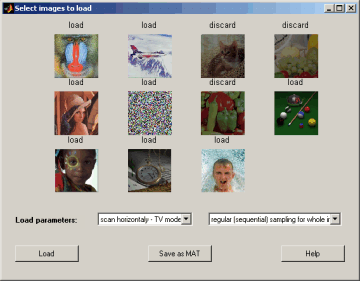
Fig. 3 Window after loading of all images. You can load or discard a specific image by
clicking on the image.
Furthermore, you can save all selected images in one MATLAB
file name.mat for quick loading and processing of images in the future.
The window Select images to load will appear. You can now select the images you want to load.
You can discard (delete) a specific image by
clicking on it (the color scale of the image
will become darker). After selecting images, you can save the set
of images into a single MAT file for more convenient loading in future sessions.
The button Save as MAT allows you to choose the destination and file name.
Later, you can read such exported image sets directly from Select images to load window.
Before you proceed to the final step, you may choose the loading parameters such as:
Direction of image scanning
- Horizontal: the case when images are transformed into
one-dimensional signals by scanning pixels horizontally row by row before further processing.
- Vertical: the case when images are transformed into one-dimensional
signals by scanning vertically column by column before further processing.
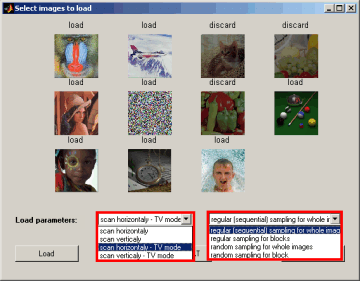
Fig. 4 Window illustrating options of converting loaded images
into suitable 1-D signals. You can estimate the parameters of demixing / ICA systems by processing
the whole images or an arbitrary size block of images.
Furthermore, you can scan pixels horizontally or vertically line by line.
Another important option is to process pixels randomly (random sampling).
Processing area
- Whole images - regular sampling (all pixels are scanned sequentially
one by one and row by row or column by column.
- Whole images - random sampling: This option uses the whole image area for
estimation of the demixing matrix (pixels are scanned randomly). This option
is recommended for images that look similar (like human faces),
- Blocks of images - regular sampling: In this option, you can choose
a rectangular block of arbitrary size on one of the images using mouse.
Only pixels within such area on every image will be taken for demixing
matrix estimation,
- Block of images - random sampling: This option uses randomly shuffled points
from rectangular blocks chosen by the user.
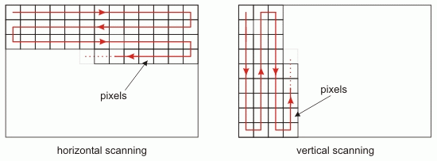
Snake form (briefly s-scanning)

TV scanning (line by line or column by column)
Fig. 5 Plots illustrating different forms of sampling.
Please note that sampling of images or preselected block of images can
proceed by sampling pixel by pixel or randomly and sparsely.
Finally, you can load so encoded images by clicking on the LOAD button.
Mixing the images
You can mix images synthetically in case they are not originally mixed.
Leave the option with identity (unit matrix) for real world data.
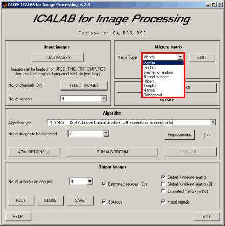
Fig. 6 Window illustrating how to choose the mixing matrix H.
If your data are real-data (not benchmark or test data), please ignore
this option. Default mixing matrix is identity matrix (H = I).
The option to mix the source signals is applied only for testing and
comparing the performance of various algorithms. In ICALAB, eight
alternative ways to generate such mixing matrices are preset:
- Identity (unit matrix) - for real world data signals,
- Randomly generated nonsingular matrix,
- Randomly generated nonsingular symmetric matrix,
- Randomly generated nonsingular ill-conditioned matrix with
the conditioning number larger than 10000,
- Hilbert matrix (which is very ill conditioned),
- Toeplitz matrix,
- Hankel matrix,
- Any specific matrix edited manually by user.
The last option is limited to 15x15 mixing matrix.
For this option, click on the
EDIT button and the following window will appears.
Every element of the mixing matrix may now be edited. After typing in the entries,
you will see that both the determinant and condition numbers of the mixing
matrix H are automatically updated.
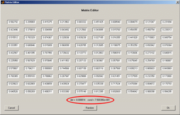
Fig. 7 Window illustrating how to edit the mixing matrix H.
The editable mixing matrix H can not be larger than 15x15 in size.
Optionally, the mixing matrix H can be rectangular, you can select
a size of the matrix H by clicking on sub-window No. of sensor
and choosing the desired number of observations.
Adding noise to the images
You can also add noise to the images before performing ICA or BSS with the following options:
- No noise - the sensor signals are not changed.
- Gaussian noise with SNR level from 20dB down to 15dB, 10dB, 5dB,
and 0dB - the white Gaussian noise is added
to the signals with the selected SNR level.
- Uniform noise with SNR level from 20dB down to 15dB, 10dB,
5dB, and 0dB - the uniformly distributed noise is added to the signals with
the selected SNR level.
- Salt & pepper noise - data drop-out noise (commonly referred
to as intensity spikes,
speckle or salt and pepper noise). The noise is caused
by errors in the data transmission. The corrupted pixels are either set to the
maximum value (which looks like snow in the image) or have single bits flipped
over. Unaffected pixels remain unchanged. The noise is quantified by the
percentage of pixels which are corrupted.
This option can be used e.g., to investigate the robustness of
a specific algorithm with respect to additive noise (please try,
for example, SOBI-RO or SONS algorithm).
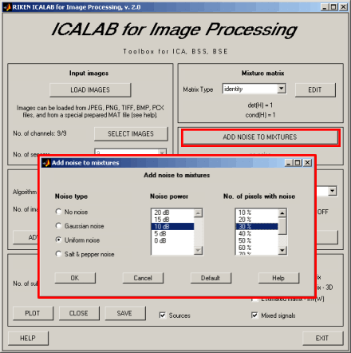
Fig. 8 Window illustrating the procedure of adding noise synthetically.
Please ignore this option for real data.
The noise can be added to test robustness of algorithms for benchmarks.
Choosing the algorithm
Once you have loaded data and optionally mixed them, you
can select one of the available algorithms. There is a long list of
algorithms which you can apply. You can find detailed descriptions of each
algorithm either in the Book
or through the online help here.
You can also add your own algorithm(s) to test and compare their performance
with other algorithms. Please refer to the example
m-files: user_algk.m
to see how ICALAB calls the user-defined algorithms. The user
algorithm should return only demixing (separating) matrix W.
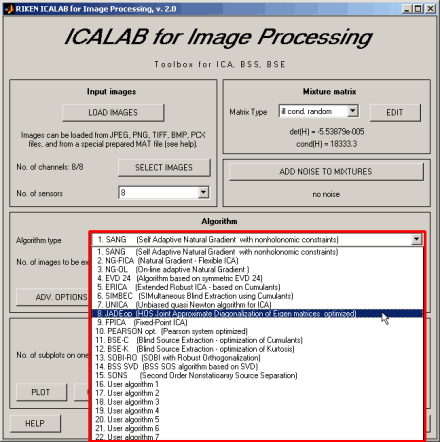
Fig. 9 Window illustrating how to select an algorithm form the long
list of available algorithms for ICA, BSS, BSE. The are three kind of algorithms:
ICA algorithms exploiting mutual independence based on higher order
statistics (HOS) (e.g., Natural Gradient (NG) algorithms, JADE, FICA (Fixed Point
algorithms)), BSS algorithms based on second order statistics (SOS) and exploiting
spatio-temporal decorrelation (e.g., BSS SVD, SOBI-RO).
BSE algorithms can extract arbitrary group of sources
sequentially one by one.
User can add their own algorithm using user_algk.m file.
Most of the algorithms within the package are supplied with default parameters.
Thus, you can start testing the algorithms without the need for adjusting
or preselecting any parameter. The default parameters are already
tuned to close to approximate optimum values for typical data. Otherwise,
you can tune the parameters for most of the algorithms by clicking
on the advanced option button ADV. OPTIONS.
It is recommended that you use this option
and tune the parameters if you are already familiar with the algorithm (see the
Book for derivation, properties, and description of the algorithms).
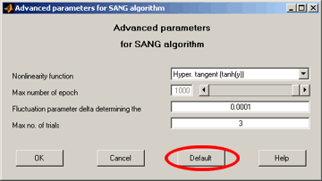
Fig. 10 Window illustrating how to use Advanced Options.
The experienced user can use the advanced options by clicking on ADV. OPTIONS button to choose
appropriate parameters. Some algorithms do not use any adjustable parameters.
After selecting an algorithm and optionally adjusting its parameters,
you can click on the button RUN ALGORITHM. The learning procedure
will begin and the algorithm specific messages will appear
in the main MATLAB command window. During computation, an additional
window displaying the algorithm name will appear. You can stop the learning
process by clicking on the INTERRUPT button.
Fig. 11 Interrupt Window. Please click on the INTERRUPT button to stop
algorithm for example if convergence is very slow and you want to try faster alternative algorithms.
Multiresolution Subband Decomposition - Independent Component Analysis (MSD-ICA)
By definition, standard ICA algorithms are not able to estimate statistically dependent sources, that is, when the assumption of independence does not hold. In many cases, however, we may be able to reconstruct the original sources using simple preprocessing techniques and to estimate mixing and separating matrices, even if the sources are not independent.
The ICALAB Toolbox enables blind separation of sources for a wide class of signals that do not satisfy the independence assumption. This can be achieved by applying second order statistics (SOS), exploiting spatio-temporal decorrelation (STD) of sources, or applying linear predictability (LP) and smoothness criteria (see the book) and for some preprocessing, such as: differentiation, high- low-pass filtering, sparsification or subband decomposition.
Moreover, each unknown source can be modeled or represented as a sum of narrow-band sub-signals (components). Provided that for some of the sub-bands (at least one) sub-components are mutually independent or temporally decorrelated, suitably designed sub-band filters can be used in the preprocessing stage to extract mixture of them assuming that these sub-bands can be identified by a priori knowledge. The standard ICA or BSS algorithms for such transformed (filtered) mixed signals can then be applied. In one of the simplest case, the source signals can be modeled or decomposed into their low- and high- frequency components. In practice, the high frequency components are often found to be mutually independent. In this case, we can use a High Pass Filter (HPF) to extract high frequency sub-components and then apply any standard ICA algorithm to such preprocessed sensor (observed) signals.
In the new, updated version ICALAB 2.0 this optional preprocessing has been implemented. To use this option, click on the Preprocessing button at the main ICALAB window.This option is particularly useful for blind separation of dependent or correlated source signals or images, such as faces or natural images, where you will notice significant improvements in the performance of the algorithms. In the preprocessing stage, more sophisticated methods, such as band pass filters or wavelet transforms, can also be applied. Optimal choice of a transformation depends on a specific application and optimal parameters are problem dependent. Experiments are necessary to choose the optimal parameters.
Preprocessing
Click on the Preprocessing button in order to perform preprocessing of sensor data. In the first step two window appear (Fig. A), when you can select different preprocessing techniques.
You can choose one from the following options:
- No preprocessing.
- Differentiation (first and second order).
- Highpass filtering (Butterworth filter) with adjustable cutoff frequency.
- Averaging with adjustable number of cascades of first order low-pass filters.
- Lowpass filtering (Butterworth filter) with adjustable cutoff frequency.
- Subband decomposition and selection: See below.
- IIR/FIR filter design tool with numerous options. See below.
- User-defined preprocessing function. Edit the file preprocessing_user.m accordingly.
Fig. A The two windows for choosing parameters of preprocessing and visualizing the mixed images.
Every preprocessing procedure is performed before the ICA algorithm and after pressing of the button OK. Preprocessing options remain active as long as you do not change the mixing matrix, the noise level or one of the preprocessing options.
Differentiation
This option allows to compute differences between values of subsequent pixels and enhance edges in the image.
Fig. B. Figures present the source images and the images after differentiation.
IIR/FIR filter design tool
This option allows comprehensive design of IIR and FIR filters with visualization of parameters. The Fig. C below shows the options, which include:
- Setting of frequency range, autodetection of significant part of the signal spectrum, based on spectrogram (95% of the signal power). You can select Range of Interest or Full Range.
- Filter type: lowpass, highpass, bandpass, bandstop.
- IIR filters: Butterworth, Chebyshev I & II, Elliptic
- FIR filters: Window-based, Least-Squares, Equiripple.
- Filter order, visualization of filter impulse response, phase or magnitude characteristics and other parameters.
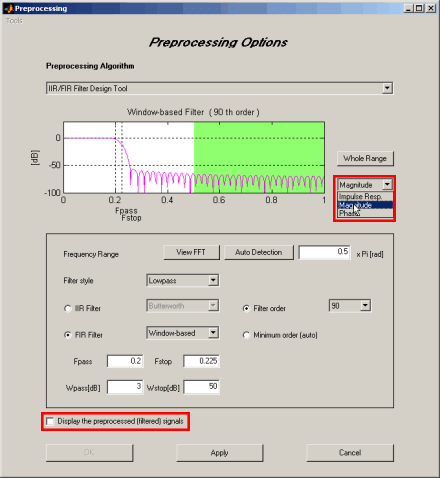
Fig. C. The window for IIR/FIR filter design. It is possible to adjust many parameters of the filters and plot the magnitude, phase and impulse response of the filter. The Range of Interest (marked in white) contains 99,9% of the power of the signal. After selecting the Display the preprocessed (filtered) signals it appears a new window with filtered images.
Subband decomposition and selection
This option provides a powerful preprocessing method for the ICA/BSS. The subband transform decomposes the input signal into several subbands by applying the corresponding bandpass filters. The figure shows the subband decomposition structure and the frequency responses for the filters. The number of subbands and the specific filter (Butterworth, Chebyshev I/II, Elliptic) can be selected by the user.
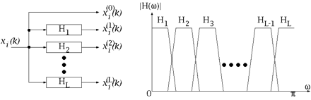
Fig. D Subband filtering.
Let be m signal mixtures xi(k); (i= 1, ..., n). Let L be the number of subbands. Then, every mixture xi(k) is decomposed into L subsignals xi(l)(k) ; (l = 1, ..., L). It is expected that if we select one or preferably several subsignal(s) from them (including the original mixture xi(k) (denoted as xi(0)(k) in the figure B), based on an appropriate criterion, we can achieve better separation.
You can set parameters listed as follows:
-
Number of subbands: This parameter corresponds to L in the above figure.
-
Filter name: To construct a bank of filters, you can choose a filter from Butterworth, Chebyshev I/II and Elliptic.
-
Order of the filter
-
Number L of subbands to be selected
-
Subband selection criterion: It can be chosen the following cost functions : l1-norm, lp-norm or kurtosis
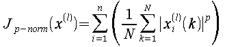; p = 0.5 or 1
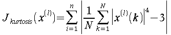
where xi(l)(k) is normalized so that it has zero mean and unit variance. The user can define his own cost function by editing the useralg_pre.m file
It is possible to view the spectrum of the data (FFT) by pressing the View FFT button in the preprocessing window.
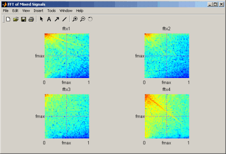
Fig. E. Spectrum plot of the signal. 2-D FFT plot of each mixed signal.
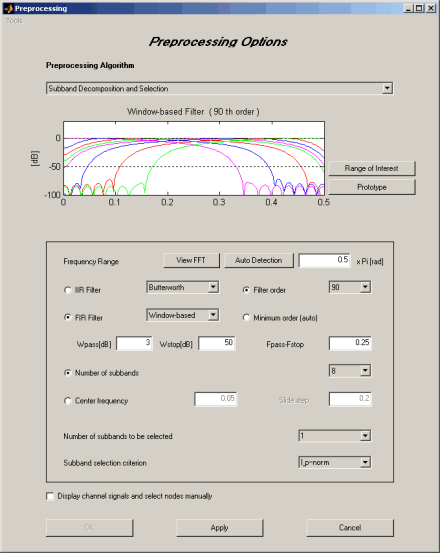
Fig. F. Subband decomposition and selection of the filtering parameters.
The user can choose the Range of Interest, display the Prototype filter or All Filters. Other options are similar to those presented in previous subsection.
If you check Display channel signals and select nodes manually you can display a subband signal for each mixture channel and check the value of the cost function. The detail of this option will be explained below.
Display channel signals and select nodes manually
If this option is selected (see Fig. F), after you click the APPLY button, the window appears where it is possible to choose channels and subbands for further processing:
Fig. G. Subband selection and display of the subbands and channel of the mixed sources. By clicking on the subband number it is possible to see the image corresponding to the chosen subband and to each channel by selecting in the Display channel no. list. The subband decomposition is performed after clicking on Continue to run button.
The lower-left figure (in Fig. G) shows the value of the chosen criterion for each subband.
If the mixture i.e. in original, observed data (ROOT in the figure) does not contain higher frequency components, those components are automatically discarded, because the cost function is normalized by the variance of filtered signals, which implies that even if the amplitudes are negligibly small, the value of the cost function can be large. The cost values for those spurious or undesirable subbands are indicated by yellow bars. The selected subband(s) is/ are indicated by red bar(s).
Although the ICALAB can select the subband(s) automatically, the user can preselect any subband manually with possibility to display the filtered signals (Fig. G). The upper plot in figure G presents the subband decomposition tree. The subband images xi(l)(k) are plotted in the right part of Fig. G. To change the target mixture, please choose the mixture number i by selecting the corresponding checkbox below the subband number.
After selecting the suitable subband filtering of sensor signals, press OK in the main preprocessing window and ICA/BSS algorithm starts to run. If you want to reset some options, press CANCEL.
The main references are:
- A. Cichocki and P. Georgiev, Blind Source Separation Algorithms with Matrix Constraints , IEICE Transactions on Information and Systems, invited paper, Special Session on Independent Component Analysis and Blind Source Separation. vole. E86-A, No.1, March 2003.
- A. Cichocki, T. Rutkowski and T. Tanaka: Beyond ICA: Multiresolution Subband Decomposition ICA (MSB-ICA), Smooth Component Analysis (SCA) with constraints, Non-Independent Blind Source Separation (NIBSS). BSI Riken Retreat Oct. 2002.
- M. Zibulevsky, P. Kisilev, Y. Y. Zeevi and B. A. Pearlmutter: Blind source separation via multinode sparse representation. In: Advances in Neural Information Processing Systems 14, Morgan Kaufmann, 1049-1056, 2002.
Visualizing the results
When the program finishes computation, we have three sets of parameters:
- The demixing (separating) matrix W.
- The matrix of independent components (or separated signals):
y(k) = W x(k), (k = 1, 2, ..., N),
where:
- N - denotes the number of samples (pixels) used in training,
- x(k) - is the vector of observations for k-th pixel,
- In practice the data are stored in matrix forms, i.e., Y = W
X and X = H S, where H is a selected mixing
matrix, X = [x(1), x(2), ..., x(N) ]
is m by N matrix of observations,
S = [s(1), s(2), ..., s(N) ] - is
the matrix of primary source signals, and
Y = [y(1), y(2), ..., y(N) ] is the
matrix of estimated sources.
- The global mixing-demixing matrix G = W H represents
the separation performance of the synthetically mixed sources. For real
world data, H = I and thereby the global matrix
G = W is equal to the demixing matrix W.
After convergence, you can visualize the results by clicking
on the PLOT button.
The decomposed images are shown in the Independent components window.
In addition,
you can see the loaded images in the Sources window, which displays
the original images. In case you mixed the images by the randomly generated
mixing matrix H a I, we recommend that
you look at the Sensors (mixtures) window. Essentially, there is no
need for this procedure if your original images were already mixed
or they represent real (measured or observed) superimposed sequence of images prepared
for decomposition
into independent components and further processing. You can
look at the performance of the selected algorithm in the
Global Matrix (Performance Index) window for the artificially mixed sources.
Fig. 12 Four windows illustrating the output results:
(a) Plot of Independent Components (IC's) or separated or extracted
(estimated) image sources depending on the used algorithm.
(b) Plot of Global matrix G = W H, displaying global performance
index (PI). This plot makes sense only for benchmarks or testing algorithms for known
sources.
(c) Plot of primary image sources (if available). If the sources are
not available, this window displays the sensor (observed) images.
(d) Plot of linearly mixed (superimposed) images. If identity
matrix (H=I) is chosen as the mixing matrix the mixed images are
identical to loaded available images.
If you choose the 3D option, the global matrix G = W H
(or G = U Q H) is also plotted in the three dimensional plot (where Q
is a prewhitening matrix and U is a rotation matrix in the two-stage
procedure with orthogonalization or prewhitening. Please see
the Book for more details).
Note: Rendering 3D plots of large number of signals might take a long processing time.
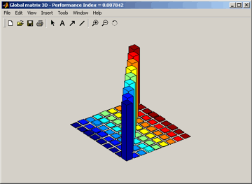
Fig. 13 Exemplary 3-D plot of a global performance matrix (G = W H).
The window for Estimated mixing matrix H = inv(W) shows distribution of
entries of estimated mixing matrix.
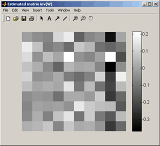
Fig. 14 Exemplary plot of estimated matrix H = inv(W).
Optionally, you can specify which plots to show. At the bottom of the main
ICALAB window, just check/uncheck the plots you want to display. Instead of
closing the windows separately, just click on the CLOSE button.
Plot windows are closed automatically if you rerun any algorithm.
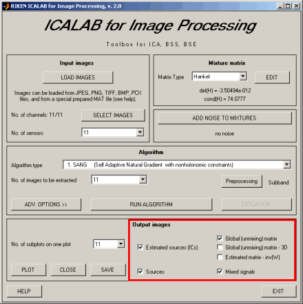
Fig. 14 Window illustrating how to choose various plots for the
visualization of obtained results.
Saving the results
You can save the separation results for further processing by
clicking on the SAVE button. Note that all of the signals will
be saved into a single MAT file (with the specified name). In the file,
the variables S, X, Y, H, W,
G are saved (with the same names as the variables), i.e., S
- sources, X - sensors (mixture), Y - independent components
or estimated sources, H - mixing matrix, W - demixing matrix,
and G - global (mixing-demixing) matrix.
The ICALAB package generally assumes the following generative mixing
model
x(k) = H s(k) + v(k),
k =
1, 2, ..., N
where v(k) is a vector of additive noise,
or in batch mode
X = H S + V
where:
X = [ x(1), x(2), ..., x(N) ],
S = [ s(1), s(2), ..., s(N) ],
V = [ v(1), v(2), ..., v(N) ];
V is a matrix representing the additive noise,
and demixing model:
yj(k) = wjT
x(k),
j = 1, 2, ..., N,
k = 1, 2, ..., N
or
y(k) = W x(k),
k =
1, 2, ..., N
or
Y = W X
where
Y = [ y(1), y(2), ..., y(N) ].
| Variable |
Description |
Dimension of matrix |
| S |
Sources or independent components |
n x N |
| X |
Observations (sensor signals) |
m x N (m >= n) |
| Y |
Estimated sources or independent components |
n x N |
| H |
Mixing matrix |
m x m or n x m |
| W |
Demixing matrix |
m x n or n x n |
| G |
Global (mixing-demixing) matrix |
m x
n or n x
n |
Table 1 Basic variables used in ICALAB
Remark: In this version some variables are non-capitalized (s, x, y).
Remark: Some algorithms automatically detect the number of sources
and reduce the number of outputs to n. The other algorithms assume that
the demixing matrix W is an m x m square matrix
(see the Book for explanation).
Deflation
After extracting the independent components or performing blind separation
of signals (from the mixture), you can discard some of the components and then project
the remaining components back to the sensor domain. This procedure is called
deflation and allows you to remove the unnecessary (or undesirable)
components that are hidden in the mixture (or overlapped data). In
other words, the deflation procedure allows you to extract and remove one or more
independent components (or uncorrelated sources) from the mixture
x(k). To perform this operation, open the Deflation procedure
window by clicking on the DEFLATION button in the main ICALAB
window. The DEFLATION button becomes activated only after estimation
of the demixing matrix W is completed using any of the built-in or
user-defined algorithms.
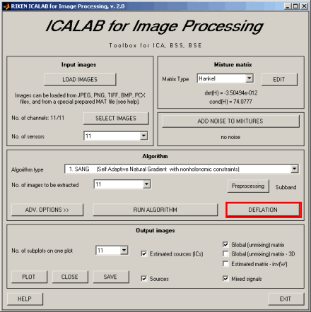
Fig. 15 Window illustrating the selection of deflation procedure
(post-processing). Please click on the DEFLATION button to start the deflation procedure,
in order to enhance or "clean" images or to remove some undesirable components.
The deflation procedure is carried out in two steps.
- In the first step, the selected algorithm estimates the demixing
matrix W and then performs the decomposition of observations
into independent components by y(k) = W
x(k) (while all pixels are projected).
- In the second step, the deflation algorithm eliminates one or more
components from the vector y(k) and then performs the
back-projection
xr = W+
yr(k), where xr is a vector of
reconstructed sensor images,
W+ = Hestim is a generalized
pseudo inverse matrix
of the estimated demixing matrix W, and yr
(k)
is the vector obtained from the vector y(k) after
removal of all the
undesirable components (i.e., by replacing them with zeros).
In the special case, when the number of sources is equal to the number of
sensors
and the number of outputs, we can use inverse matrix W-1
instead of W+.
In batch format, the reconstruction procedure can be written as
Xr = W+ Yr
where
Xr = [ xr(1), xr(2), ..., xr(N) ] - reconstructed sensor images,
Yr = [ yr(1), yr(2), ..., yr(N) ] - reduced (selected or filtered) independent components.
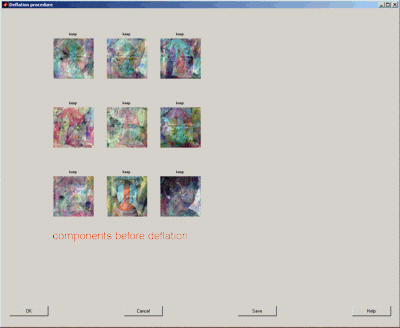
(a)
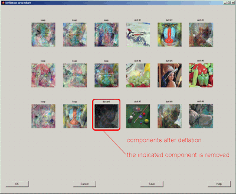
(b)
Fig. 16 (a) Window illustrating how to perform deflation.
(b) Left plots show the independent components or separated images
and the right plots show the reconstructed or enhanced
images after eliminating undesirable components. In this example,
only the last component was removed.
In the deflation procedure, you can eliminate the undesirable components
by clicking on them in the left plane. In general, you may want to discard
more than one component by choosing specific components, representing
for example noise, artifacts or undesirable interference.
After selecting the appropriate components you can perform
deflation by pressing the button Do deflation.
An example of removing a component (image no 9) is shown
in the Fig. 16.
Note that the deflation procedure may be slow for large data sets.
After completing the deflation procedure, the reconstructed sensor signals
can be saved for further processing by clicking on the
Save results button.
This allows you to process reconstructed sensor signals by applying the
same or different ICA/BSS/BSE algorithms. For example, in the first stage you can
apply a second-order statistics BSS algorithm to recover sources with temporal
structures. In the second stage, you may use any higher-order statistics ICA algorithm to
recover independent components.
In the same way, you can save the reconstructed images obtained by the deflation procedure.
The reconstructed data can be saved in name_XR.mat file.
Exit from ICALAB
It is recommended that one exit from the ICALAB program by clicking
on the EXIT button in the main program window below:
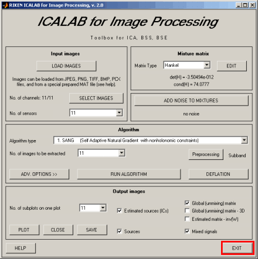
Fig. 17 Window illustrating how to exit from program. Please click on
the EXIT button to leave the program.
Algorithms in ICALAB for Image Processing
Algorithms SANG, NG-FICA, NG-OnLine, ERICA
belong to the family of
natural gradient (NG) algorithms and are described in detail in Chapters 6 - 8.
The algorithms have been originally presented in the following papers:
- S. Amari, A. Cichocki, and H.H. Yang,
A new learning
algorithm for blind signal separation, in Advances in Neural Information
Processing Systems, NIPS-1995, Vol. 8, pp. 757-763. MIT Press: Cambridge,
MA, 1996.
- S. Amari and A. Cichocki,
Adaptive
blind signal processing - neural network approaches, Proceedings IEEE, Vol. 86, pp.
1186-1187, 1998.
- A. Cichocki, R. Unbehauen and E. Rummert,
Robust
learning algorithm for blind separation of signals,
Electronics Letters, Vol. 30, No.17, 18th August 1994, pp. 1386-1387.
- A. Cichocki and R. Unbehauen, Robust
neural networks with on-line learning for blind identification and blind separation of sources, IEEE Trans. on
Circuits and Systems - I: Fundamental Theory and Applications, Vol. 43, Nov. 1996 (submitted in June 1994),
pp. 894-906.
- S. Choi, A. Cichocki, and S. Amari,
Flexible
independent component analysis, Journal of VLSI Signal Processing, Vol. 26, No.
1/2, pp. 25-38, 2000.
- S. Cruces, L. Castedo, A. Cichocki,
Robust
blind source separation algorithms using cumulants, Neurocomputing, vol. 49, pp. 87-118, 2002.
- S. Cruces, L. Castedo, A. Cichocki,
Novel Blind Source Separation
Algorithms Using Cumulants, IEEE International Conference on Acoustics,
Speech, and Signal Processing, Vol. V, pp. 3152-3155, Istanbul, Turkey,
June 2000.
- L. Zhang, S. Amari and A. Cichocki,
Natural
Gradient Approach to Blind Separation of Over- and Under-complete Mixtures,
Proceedings of ICA'99, pp.455-460, Aussois, France, January 11-15, 1999.
- L. Zhang, A. Cichocki and S. Amari,
Natural
Gradient Algorithm to Blind Separation of Overdetermined Mixture with Additive Noises,
IEEE Signal Processing Letters, Vol.6, No. 11, pp. 293-295, 1999.
- L. Zhang, S. Amari and A. Cichocki,
Equi-convergence
Algorithm for blind separation of sources with arbitrary distributions,
LNCS 2085, J. Mira & A. Prieto (Eds), Springer, pp. 826-833, 2001.
- A. Cichocki and P. Georgiev,
Blind Source Separation Algorithms with Matrix Constraints , IEICE
Transactions on Information and Systems, invited paper, Special Session
on Independent Component Analysis and Blind Source Separation. vol. E86-A,
No.1, March 2003.
The wide class of NG algorithms can be represented in a general form as
W(l+1) = W(l) +
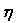(l) [ D -
<F(y)>] W(l)
where is a
symmetric positive definite matrix, typically,
=
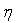0 I,
F(y) is a suitably chosen n by n matrix of nonlinearly transformed
output signals, typically with entries
fij = f(yi) yj
or
fij = f(yi) g(yj),
and
D = {d11, d22, ..., dnn}
is a diagonal positive definite matrix, typically with entries
dii = 1
or
dii = <f(yi) g(yj)>.
SANG (Self Adaptive Natural Gradient algorithm with nonholonomic constraints)
SANG is a batch algorithm which can be represented in the following form:
W 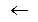 W +
[D -
<f(y) gT(y)>] W
where the entries of the diagonal matrix D satisfy the nonholonomic
constraints, i.e.
dii = <f(yi) yi>,
dij = 0, for i not equal j.
and the learning rate matrix
is a diagonal matrix with entries
ii= [dii + < f ' (yi) >]-1.
Main references:
- S. Amari, T. Chen and A. Cichocki, Non-holonomic constraints in learning
blind source separation, Progress in Connectionist-Based Information Systems,
Eds. N. Kasabov, ICONIP-97, New Zealand, Springer, Nov. 1997, Vol. I, pp. 633-636.
- S. Amari, T. Chen and A. Cichocki, Nonholonomic orthogonal learning
algorithms for blind source separation, Neurocomputation, Vol. 12, 2000, pp. 1463-1484.
- A. Hyvärinen, J. Karhunen, and E. Oja,
Independent Component Analysis,
John Wiley, New York, 2001.
NG-FICA (Natural Gradient - Flexible ICA)
The NG - FlexICA (Natural Gradient Flexible ICA) algorithm has been developed
by S. Choi, A. Cichocki and S. Amari (with MATLAB implementation by Seungjin Choi).
The main references are:
- S. Choi, A. Cichocki, and S. Amari,
Flexible
independent component analysis, Journal of VLSI Signal Processing,
Vol. 26, No. 1/2, pp. 25-38, 2000.
- S. Choi, A. Cichocki, and S. Amari,
Flexible
independent component analysis, in Proc. of the 1998 IEEE Workshop on NNSP,
pp 83-92, Cambridge, UK, 1998.
The algorithm is described in detail in Section 6.4.
TICA Algorithm
Thin algorithm for Independent Component Analysis (TICA) has been developed
by Sergio Cruces and Andrzej Cichocki [1].
The TICA algorithm is able to extract simultaneously arbitrary number of
components specified by the user. The algorithm is based on criteria that
jointly perform maximization of several cumulants of the outputs and/or second
order time delay covariance matrices. This employed contrast function combines
the robustness of the joint approximate diagonalization techniques with the
flexibility of the methods for blind signal extraction. Its maximization leads
to hierarchical and simultaneous ICA extraction algorithms which are
respectively based on the thin QR and thin SVD factorizations. The TICA
algorithm can be regarded as hierarchical/simultaneous extensions of the fast
fixed point algorithms [2] and has also close links to [3] and [4,5].
The main references are:
- S. Cruces, A. Cichocki,
Combining blind source extraction with joint approximate diagonalization: Thin
Algorithms for ICA, Proc. of the Fourth Symposium on Independent
Component Analysis and Blind Signal Separation, Japan, pp. 463-469, 2003.
- A. Hyvärinen, E. Oja, Fixed point algorithm for independent component
analysis, Neural Computation, vol. 9, pp. 1482-1492, 1997.
- L. De Lathauwer, P. Comon, B. De-Moor, J. Vandewalle, Higher-order
power method - application in Independent Component Analysis, Proc. of
NOLTA, 1995.
- A. Belouchrani, K. Abel-Meraim, J. F. Cardoso, E. Moulines, A blind
source separation technique using second-order statistics, IEEE Trans. on
Signal Processing, vol. 45(2), pp. 434-444, 1997.
- J. F. Cardoso, A. Souloumiac, Blind beamforming for non Gaussian
signals, IEE Proc.-F, vol. 140 (6), pp. 362-370, 1993.
ERICA - Equivariant Robust ICA - based on Cumulants
ERICA Algorithm - Equivariant Robust Independent Component Analysis algorithm
(which is asymptotically equivariant in the presence of Gaussian noise)
has been developed by Sergio Cruces, Luis Castedo and Andrzej Cichocki.
This algorithm separates the signals from m mixture of n
sources (with non zero kurtosis) in the presence of Gaussian noise.
This algorithm is a quasi-Newton iteration that will converge to a saddle
point with locally isotropic convergence, regardless of the distributions of sources.
The use of prewhitening is not necessary for this algorithm to converge.
The main references are:
- S. Cruces, L. Castedo, A. Cichocki,
Robust
blind source separation algorithms using cumulants, Neurocomputing, vol. 49, pp. 87-118, 2002.
- S. Cruces, L. Castedo, A. Cichocki,
Novel Blind Source
Separation Algorithms Using Cumulants, IEEE International Conference on
Acoustics, Speech, and Signal Processing, Vol. V, pp. 3152-3155, Istanbul,
Turkey, June 2000.
SIMBEC - SIMultaneous Blind Extraction using Cumulants
SIMBEC algorithm (Simultaneous Blind signal Extraction using Cumulants)
was implemented by Sergio Cruces, Andrzej Cichocki, and Shun-ichi Amari.
It performs simultaneous blind signal extraction of an arbitrary group of
sources from a rather large number of observations. Amari proposed in [1]
a gradient algorithm that optimizes the ML criteria on the Stiefel manifold
and solves the problem when the approximate (or hypothetical) densities of
the desired signals are a priori known. This algorithm [2-4] extends this
result to other contrast functions that do not require explicit knowledge
of the source densities. The necessary and sufficient local stability conditions
of the algorithm are exploited to obtain fast convergence.
The main references are:
- S. Amari, Natural Gradient Learning for over- and under-complete
bases in ICA, Neural Computation, Vol. 11, pp. 1875-1883, 1999.
- S. Cruces, A. Cichocki, S. Amari,
Criteria for the
Simultaneous Blind Extraction of Arbitrary Groups of Sources, in the 3rd
international conference on Independent Component Analysis and Blind Signal
Separation. San Diego, California, USA, 2001.
- S. Cruces, A. Cichocki, S. Amari,
The Minimum Entropy
and Cumulant Based Contrast Functions for Blind Source Extraction, in Lecture
Notes in Computer Science, Springer-Verlag, IWANN'2001, Vol. II, pp. 786-793,
- S. Cruces, A. Cichocki, S. Amari,
On a new
blind signal extraction algorithm: different criteria and stability analysis,
IEEE Signal Processing Letters, vol. 9, no. 8, pp. 233-236, 2002.
The algorithm can extract an arbitrary group of sources specified by the user.
JADE-op - Robust Joint Approximate Diagonalization of Eigen matrices (with
optimized numerical procedures)
The JADE algorithm has been originally developed and implemented by Jean-Francois
Cardoso and Antoine Souloumiac.
The main references are:
- J.-F. Cardoso and A. Souloumiac, Blind
beam-forming for non Gaussian signals, IEE Proceedings-F, pp. 362-370, Vol. 140, 1993.
- J.-F. Cardoso and Antoine Souloumiac,
Jacobi
angles for simultaneous diagonalization, In SIAM Journal of
Matrix Analysis and Applications, Vol. 17, No 1, pp. 161-164, Jan. 1996.
The related references are:
- J.-F. Cardoso,
On the performance
of orthogonal source separation algorithms, In Proc. EUSIPCO, pp. 776-779,
Edinburgh, September 1994.
- J.-F. Cardoso,
High-order contrasts
for independent component analysis, Neural Computation, Vol. 11, no 1,
pp. 157-192, Jan. 1999.
In the ICALAB package, we have used a modified version of this algorithm with reduced
number of eigen matrices as described in Chapter 4. We have also optimized some
numerical procedures in MATLAB to speed up the algorithm.
This algorithm is free of any adjustable parameters (there is no parameter tuning).
The JADE-opt has been modified and implemented by Y. Terazono.
FPICA (Fixed-Point ICA)
The Fixed Point or Fast ICA algorithm has been originally developed
by Aapo Hyvärinen and Erkki Oja:
- A. Hyvärinen and E. Oja,
A Fast Fixed-Point
Algorithm for Independent Component Analysis, Neural Computation, 9(7):1483-1492, 1997.
- A. Hyvärinen and E. Oja,
Independent Component Analysis: Algorithms
and Applications, Neural Networks, 13(4-5):411-430, 2000.
- A. Hyvärinen, Fast and Robust
Fixed-Point Algorithms for Independent Component Analysis, IEEE Transactions on Neural
Networks 10(3):626-634, 1999.
In the ICALAB package, we have implemented the FPICA sequential blind extraction
algorithm which extracts independent non-Gaussian distributed sources one by
one as described in Chapter 5, Section 5.2.4.
Pearson opt. (Pearson system optimized)
Pearson system is an HOS ICA algorithm originally developed by Juha Karvanen,
Jan Eriksson and Visa Koivunen:
- J. Karvanen and V. Koivunen, Blind separation methods based
on Pearson system and its extensions, Signal Processing, 2002
- J. Karvanen and V. Koivunen, Blind Separation of Communication
Signals Using Pearson System Based Method, Proceedings of The Thirty-Fifth
Annual Conference on Information Sciences and Systems, Volume II,
pp. 764-767, Baltimore, USA, March 2001.
- J. Karvanen, J. Eriksson, and V. Koivunen,
Pearson system based
method for blind separation, Proceedings of Second International
Workshop on Independent Component Analysis and Blind Signal Separation,
Helsinki 2000, pp. 585-590.
- A. Hyvärinen, J. Karhunen, and E. Oja,
Independent Component
Analysis, John Wiley, New York, 2001.
The Pearson system is employed for modeling a wide class of both symmetric and
asymmetric source distributions.
In fact, the algorithm is similar to the natural gradient (NG) and its optimized parallel
version Fast ICA algorithm for maximum likelihood estimation. The main difference
is the selection of an activation function f(y) (score function)
on the basis of estimated on-line
second, third and fourth order moments (see chapter 6, section 6.4).
BSS SVD (SOS BSS algorithm based on SVD)
The BSS SVD algorithm is similar to the
AMUSE algorithm (see the Book).
However, it uses a different
prewhitening procedure and singular value decomposition (SVD) instead of
the symmetric EVD for a single time-delayed covariance matrix. The algorithm is very
fast but unfortunately, sensitive to additive noise.
See Chapter 4 and the related references:
- R. Szupiluk, Blind Source Separation for Noisy Signals, Ph.D. Thesis
(in Polish), Supervisor A. Cichocki, Warsaw University of Technology, Poland, June 2002.
- R. Szupiluk, A. Cichocki, Blind signal separation using second order
statistics, Proc. of SPETO 2001, pp. 485-488.
SOBI-RO - Robust SOBI with Robust Orthogonalization
The SOBI-RO (Robust Second Order Blind Identification with Robust Orthogonalization)
algorithm is described in detail in Chapter 4 (Section 4.4).
The SOBI-RO algorithm employs the robust orthogonalization preprocessing
as described in Section 4.3.1.
The related references are:
- A. Belouchrani, K. Abed-Meraim, J.F. Cardoso, and E. Moulines,
Second-order blind separation
of temporally correlated sources, in
Proc. Int. Conf. on Digital Sig. Proc., (Cyprus), pp. 346-351, 1993.
- A. Belouchrani, and A. Cichocki,
Robust whitening
procedure in blind source separation context, Electronics Letters, Vol. 36,
No. 24, 2000, pp. 2050-2053.
- S. Choi, A. Cichocki and A. Belouchrani,
Blind separation
of nonstationary sources in noisy mixtures, Journal of VLSI Signal
Processing 2002 (in print).
SONS - Second Order Nonstationary Source Separation
SONS (Second Order Nonstationary Source Separation) algorithm is described
in detail in Chapter 4 (Section 4.4.1).
The algorithm allows you to perform both ICA (for arbitrary distributed
nonstationary sources with temporal structures) and BSS (for colored sources
with different spectra), depending on the time delays, the
number of time windows, and the size of each window.
In the Advanced option, you can select these parameters to optimize the
algorithm for a specific problem.
If you want to obtain smooth signals the sub-window should have 500 samples or more.
In order to achieve sparse independent signals choose a short sub-window in the
range 10-50 samples.
The SONS algorithm has been developed by S. Choi and A. Cichocki and presented
in the following:
- S. Choi and A. Cichocki,
Blind
separation of nonstationary sources in noisy mixtures, Electronics
Letters, Vol. 36, pp. 848-849, April 2000.
- S. Choi and A. Cichocki,
Blind
separation of nonstationary and temporally correlated sources from noisy mixtures, IEEE
Workshop on Neural Networks for Signal Processing, NNSP'2000, pp. 405-414,
Sydney, Australia, Dec. 11-13, 2000.
Related references are:
- S. Choi, A. Cichocki, and A. Belouchrani,
Blind
separation of second-order nonstationary and temporally colored sources,
Proceedings of the 11th IEEE Signal Processing Workshop on Statistical Signal
Processing, pp. 444-447, Singapore, 2001.
- S. Choi, A. Cichocki, and A. Belouchrani,
Second order
nonstationary source separation, Journal of VLSI Signal Processing, 2002.
- D.-T. Pham and J.-F. Cardoso,
Blind separation
of instantaneous mixtures of non stationary sources, IEEE Trans.
Signal Processing, Vol. 49, No 9, pp. 1837-1848.
User algorithms
You can integrate your own algorithms or any ICA/BSS, BSE algorithm available
in MATLAB within the ICALAB package, by simply inserting the code(s) in each of:
user_alg1.m - user_alg10.m files.
Note: the algorithm must be coded in such a way that it returns only one single variable:
demixing matrix W.
If the algorithm estimates the mixing matrix H, you may use
W = pinv(H).
BENCHMARKS
The directory BENCHMARKS consists of a collection of color and
grayscale images with various resolutions.
The images are saved individually and all collected in one MATLAB file
NAME.mat in order to save time during loading.
You can download all benchmarks in matlab format (*mat),
files tared and gzipped to one big file:
benchmarks_2d.tgz (4.42MB).
The most interesting benchmarks are briefly described below.
Two-dimensional sine waves
sin2d
This color and grayscale benchmark contains 12 two-dimensional
sine wave sources as illustrated in Fig. 1B.
| 3D view |
color image |
grayscale image |
|
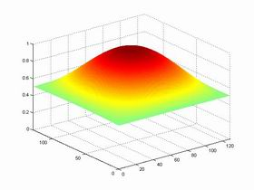 |
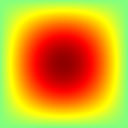 |
|
|
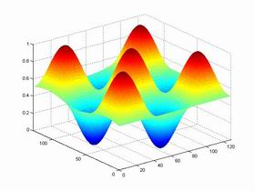 |
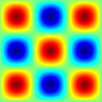 |
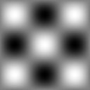 |
|
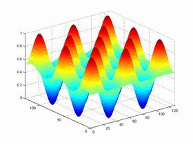 |
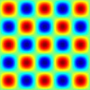 |
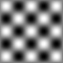 |
Fig. 1B Two-dimensional sine waves (sin2d)
|
|
|
|
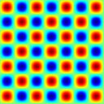 |
|
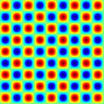 |
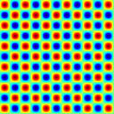 |
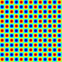 |
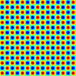 |
|
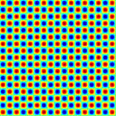 |
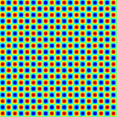 |
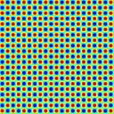 |
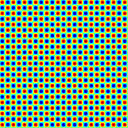 |
Fig. 2B Full set of color two-dimensional sine waves (sin2d)
Fig. 3B Full set of grayscale two-dimensional sine waves (sin2d)
FWRsin2d
These color and grayscale benchmarks are similar to the sin2d benchmarks,
but the 2-D sine waves are full wave rectified (see Fig. 4B).
| 3D view |
color image |
grayscale image |
 |
|
|
 |
 |
|
|
|
|
|
Fig. 4B Full wave rectified two-dimensional sine waves (FWRsin2d)
HWRsin2d
These color and grayscale benchmarks are similar to the benchmarks sin2d,
but the two-dimensional sine waves are half-wave rectified so the images become
more sparsely distributed (see Fig. 5B).
| 3D view |
color image |
grayscale image |
|
|
 |
 |
|
|
|
|
|
|
|
|
Fig. 5B Half wave rectified two-dimensional sine waves (HWRsin2d)
sin1d
These benchmarks are similar to the above benchmarks, but sine waves are
one-dimensional (see Figs 6B, 7B, 8B).
| 3D view |
color image |
grayscale image |
|
|
|
|
| |
|
|
|
|
|
|
Fig. 6B One-dimensional sine waves (sin1d)
| 3D view |
color image |
grayscale image |
 |
|
 |
|
|
|
|
|
|
|
|
Fig. 7B Full wave rectified one-dimensional sine waves (FWRsin1d)
| 3D view |
color image |
grayscale image |
|
|
 |
|
|
|
|
|
|
|
|
|
Fig. 8B Half wave rectified one-dimensional sine waves (HWRsin1d)
| 3D view |
color image |
grayscale image |
|
|
|
|
|
|
|
|
|
|
|
|
Fig. 9B One-dimensional skewed sine waves (sin1d_skew)
| 3D view |
color image |
grayscale image |
|
|
|
 |
|
|
|
|
|
|
|
|
Fig. 10B Full wave rectified one-dimensional skewed sine waves (FWRsin1d)
| 3D view |
color image |
grayscale image |
 |
 |
|
|
|
|
|
|
|
|
|
Fig. 11B Half wave rectified one-dimensional skewed sine waves (HWRsin1d_skew)
Sparse images
The benchmarks edges1d, edges1ds and edges2d
consist of gray scale level "sparse" images
representing regular edges. Please try any HOS ICA algorithm like SANG,
JADE or FICA to extract such images from their mixtures.
Fig. 12B Sparse images (edges1d)
Fig. 13B Sparse images (edges1ds)
Fig. 14B Sparse images (edges1d)
Natural images
This benchmark consists of 10 natural images (e.g.
faces, animals, objects) and two synthetically created noise images.
Fig. 15B Natural images
Textures
This benchmark consists of 16 typical textures.
Fig. 16B Textures
Human faces
Color human faces
This benchmark consists of 9 human faces selected from
face databases of Psychology Department of University of Stirling
Fig. 17B Human faces
Grayscale human faces
This benchmark consists of 6 human faces selected from
face databases of Psychology Department of University of Stirling
Fig. 18B Human faces
MRI images
These benchmarks consist each of 10 typical MRI images
selected from databases of
The MRI Tutor Web Site and
The Whole Brain Atlas
Fig. 19B Color MRI images
Fig. 20B Grayscale MRI images


{kind=link}
{kind=link}
{kind=link}
{kind=link}
{kind=link}
{kind=link}
{kind=link}
{kind=link}
{kind=link}
{kind=link}